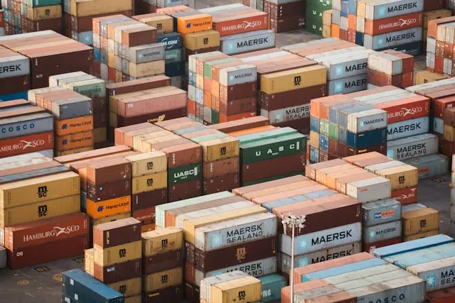
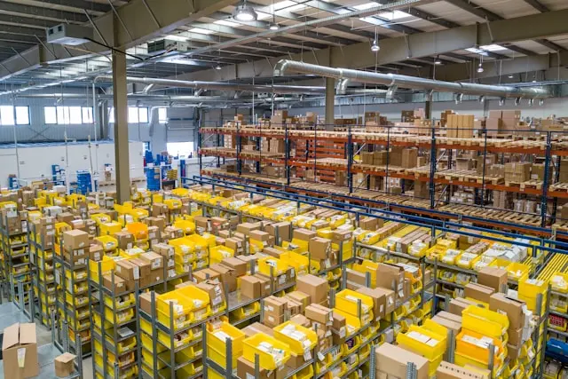

Mes impacts en tant qu'Expert en Supply-Chain
Des solutions complètes et éprouvées pour optimiser chaque maillon de votre chaîne logistique en End-to-End
Des solutions complètes et éprouvées pour optimiser chaque maillon de votre chaîne logistique en End-to-End
Un audit complet en mode 360° du niveau de la digitalisation de votre supply chain End-to-End de sorte à identifier les leviers de performance et d'excellence opérationnelle.
(Méthodologie, référentiel et outil de Supply Chain Masters®)
Améliorer votre processus Achats hors production et définir votre stratégie d'approvisionnements optimum en lien avec votre demande client.

Améliorer les performances InBound & OutBound de votre entrepôt pour gagner en performance, temps de traitement, profitabilité et excellence opérationnelle.

Optimiser l'organisation du plan de transport distribution Clients pour réduire les coûts et améliorer le service à vos clients.

Définition et mise en place de stratégies supply chain alignées avec vos objectifs business cadre Comex

Discutons de vos besoins spécifiques et définissons ensemble la meilleure approche.
Demander un devis personnalisé